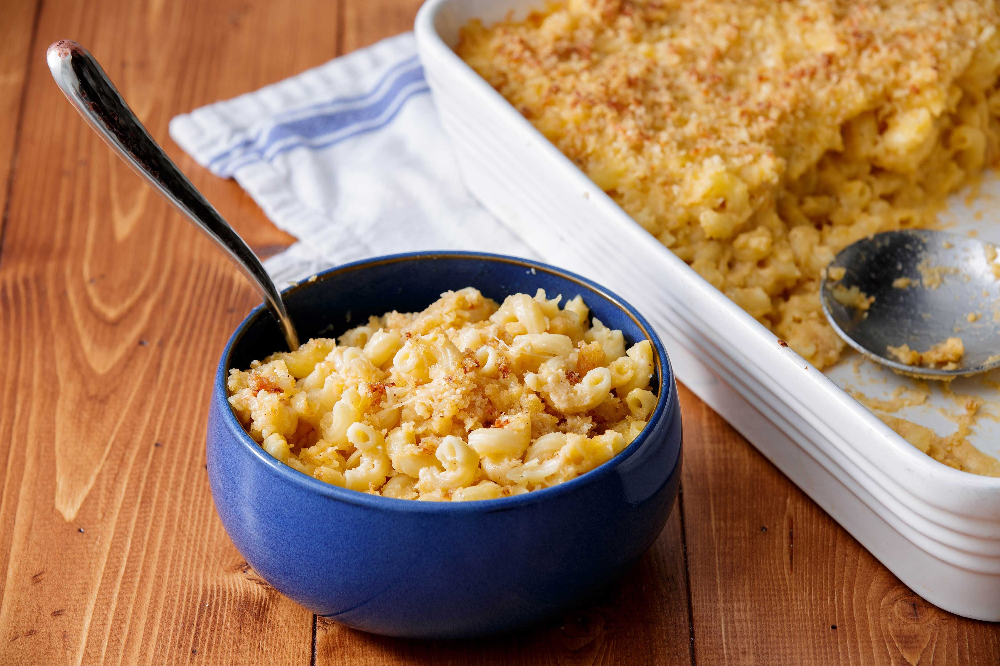

Homemade Mac and Cheese

A simple recipe for making Mac and Cheese at home!
In just half an hour you can have a rich homemade mac and cheese perfect for any meal or snack.
Ingredients
- 8 ounces uncooked elbow macaroni
- 2 cups shredded cheddar cheese
- 1/2 cup grated Parmesan cheese
- 2 cups milk
- 1/4 cup butter
- 2 tablespoons all-purpose flour
- 2 tablespoons butter
- 1 pinch paprika
Steps
- To start, we cook macaroni according to the package directions. Drain.
- In a saucepan, melt butter or margarine over medium heat. Stir in enough flour to make a roux. Add milk to roux slowly, stirring constantly.
- Stir in cheeses, and cook over low heat until cheese is melted and the sauce is a little thick. Put macaroni in large casserole dish, and pour sauce over macaroni. Stir well.
- Melt butter or margarine in a skillet over medium heat. Add breadcrumbs and brown. Spread over the macaroni and cheese to cover. Sprinkle with a little paprika.
- Bake at 350 degrees F (175 degrees C) for 25 minutes. Serve and enjoy.